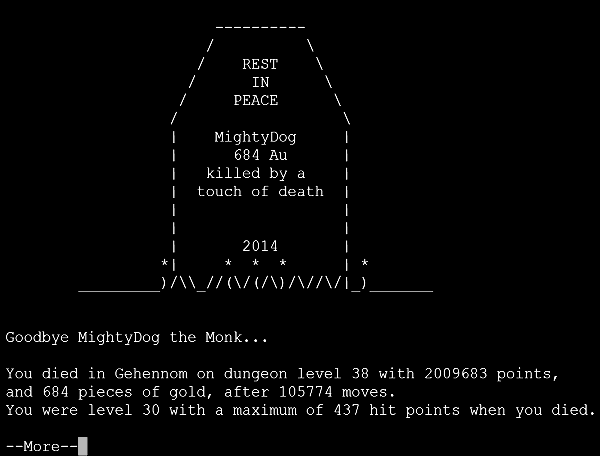
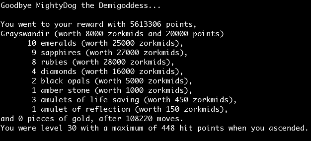
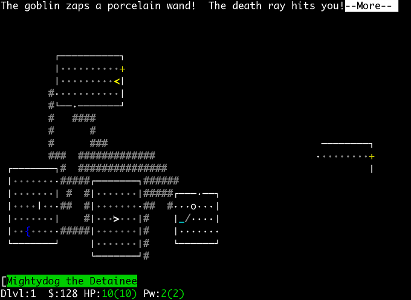

Nethack
Hard Place for Mighty Dog the Monk
Yeah, recently got back into Nethack--best computer game ever! If you know nothing about the game, find out all about it at the main site and the nethack wiki. While you can download and play on whatever-computer-is-handy, I prefer to play on the public and free server here.
I got back into playing about a week or so ago from a conversation during dinner. It had been a haitus of about three years. While I'm not a great player, I do know quite a bit as I've been playing since the late eighties.
I usually play a Tourist, one of the hardest characters at first, but surprisingly good towards the end (thanks to the extremely useful quest artifact). Of my three ascendancies, my last two were with Tourists.
When I resumed playing on the public server (and after luckily guessing my old password), I found that several years ago, I had started a Barbarian, so I continued playing that character with fair success.
But as usual, Mighty Dog the Barbarian died YASD. So it goes. My good friend, Chris (experienced) and my girlfriend (complete novice) started playing too. We sometimes just hang out at my house, playing nethack or watching each other play. Despite what you're thinking, playing together like that can be quite social.
After several failed restarts with various characters, I resolved to try to ascend as a Monk AND maintain vegetarian AND weaponless status. Yeah, it's not easy, but I'm feeling cocky.
My monk is doing quite well: great pet, decent hit points, tenth level, sleep spell, detect monster, and light. So I guess I'm ready to get that luckstone in the bottom of the mines.
Although monk Mighty Dog has crappy AC (Minetown was pretty lame as were the few shops I've found) he's at Expert level hand-to-hand and the monsters of the mines fall without much problem. If things get rough, I can easily cast a bunch of sleep spells and work it out. Andy, my dog, is big and healthy from a steady diet of gnomes and dwarves.
But then something very unusual happens at level 10 of the Gnomish mines: I find an Iron Golem. What the hell is an Iron Golem doing here? They're waaaay too hard for the mines! But they are slow and I'm fast; I'll run around it on the way out. At least that's what I'm thinking as I descend to level 11.
For those who've never played monks, they get the Warning intrinsic fairly early. With this, even if you can't see a monster, you can tell that a baddie is nearby with this intrinsic.
And with this warning I saw something very nasty moving towards me on this 11th level. Since I was near the down stairs, I went ahead and went down again. If nothing else, I should be able to better fight this nasty (or run around it) with a luckstone, right? By the way, how far down does this Gnomish Mine go?
Down to level 12. Yup, it looks like the base; I'm in the middle of an open room and tons of dwarves, gnomes, and hobbits are surrounding me. Piece o' cake. Clear the big room and start searching for the luckstone. And then...
A balrog.
Are you fucking kidding me? What the hell (pun intended) is that doing in the Gnomish Mines? No time to look for a polymorph trap, some weird bones pile, a wand, etc., no time to wait for a chameleon to change! Abort abort abort!!!
I high-tail it back up to level 11 before the balrog can kick my ass. And guess what's waiting for me? Yep, that thing I was warned about was in fact a master lich! And the first thing he does is destroy my armor, curse my tools, and cast Summon Nasties twice.
I see another iron golem AND a
yellow dragon pop up to help
the Master Lich finish me off (along with a slew of other monsters
more appropriate to this level).
So here's where I am now:
Yeah, that '2' above and to the right of me is the yellow dragon coming with the iron golem just behind it. You can see how I dug like crazy just to make it to the stairs with the Master Lich riding my ass all the way.
I am now standing on the up stairs (Elbereth engraved with a wand of digging), but the Master Lich will simply go up with me. While Elbereth will protect me from hits, it doesn't stop the Master Lich from casting spells, and he's been going crazy!
And even if I make it past the Master Lich (a very big IF!), there's still the OTHER iron golem on level 10 waiting for me. Sigh.
So...what am I to do?
Any hints will be laughed at and then taken very seriously.
Follow-up
Well, after thinking about it and talking about it with friends for a couple of days, I decided to try and fight it out with that damn Master Lich.
I wasn't doing much damage to him/it, but fortunately he wasn't doing too much to me either (monks have cold resistance). But the nasties were closing in on me, and they were taking me down. But my dog, Andy, managed to kill the Carnivorous Ape that was crushing me--good dog!
And I did a good hit to the Master Lich, "The Master Lich staggers from your powerful strike!" causing it to take a step back. And faster than you can blink, I was up those stairs. "Andy is still eating. Andy's leash snaps loose!" Sorry, Andy. I'll come back for you later.
Parents know that they often make promises that they can't guarantee. And while I very much planned to come back and rescue my poor Andy (much later, after I had gained a LOT of levels), my monk's time in the Dungeons of Doom came to an end after trying to get yet another unicorn horn. Damn, those things can hit hard.
New Character
Another Monk
This guy is doing quite a bit better. First of all, I waited before doing the quest. Yeah, a loooong time--like well after doing Valley of the Dead! Master Kaen is nasty! Glad I waited
But I'm getting ahead of myself. This new monk was doing very well in general (but he lost his robe on the 2nd level by reading an unidentified scroll of Destroy Armor. Bye-bye spell casting for a while! But once he made it to Sokoban, I started playing very carefully, and I managed to keep him alive in spite of everything (thanks much to his ability to cast Sleep spells--still 12% fail which seemed to happen ALL THE TIME!).
But I fucked up this monk, twice. 1) I forgot that black puddings break vegetarian conduct (brown puddings are fine, even delicious). Sigh, well at least I can get telepathy! 2) Forgot I was still wielding a pick-axe and accidentally bumped into a monster. Good-bye weaponless conduct! Unfortunately as a chaotic, the weapons I can get through #offering aren't any better than my fists.
Whereas the previous dungeon kept dealing me insanely difficult monsters, this dungeon stymied me with a dearth good things. For example, only two shops were open in Mine Town (Izchak's and a food store), and the first altar I found was on level 18. As I write this, I still can't believe it.
Thanks to successfully luring wraiths down from the Valley to Gehennom, I went from 16th level to 26th very quickly (yay!). But I still had to wish for things that are typically found.
Wishes so far:
- Eye of Aethiopica
Talk about a dumb move! My guy is chaotic; he can't even pick the damn thing up! Wasted that magic lamp.
So it goes.
- Bag of Holding
Yup, got the amulet of reflection in Sokoban and never found even a plain sack until level 19. That sucked! Funny, found two more deep in Gehennom.
- Tinning Kit
Boy, this was one hell of a sad dungeon when you can't even find a tinning kit! But when you're fighting a bunch of trolls it's indespensible (and very nice too when fighting giants). But I did actually find one, after I was a Master (30th level)!
- Master Key of Thievery
This is a common wish for chaotics. The half physical damage makes such a difference! Unfortunately I thought it came with magic resistance (most quest artifacts do), but it doesn't, much to my sadness (see below).
- Magic Marker
Probably the first thing most wish for once they've reached the castle.
- Speed Boots, Robe, Helm of Brilliance
Seriously. Never found any of these in the entire dungeon! And yes, I searched Gehennom meticulously! And I wasted two wands of polymorph poly-piling for these (yes, I DID start with magic armor--I'm not that stupid).
- Can of Grease
Can't believe I had to burn a wish on this, but it's the easiest way to be safe from kraken (oh yeah, I never found an oilskin cloak either!).
YASD
Oh, the Irony!
While playing nethack you have luck that is amazing in ways that can make you jump for joy, laugh out loud, or more commonly: cry. And then there are times where some amazing stroke of luck just makes you scratch your head and mutter.
I had a monk that did pretty well. Despite a dungeon that was void of most of the useful items, I got lucky with wishes, and I was able to get things that way (but it kind of sucks wishing for things like a can of grease, speed boots, etc.). And I quickly found my monk a Master (level 30), yay!
As my monk was chaotic, I wished for the Rogue's quest artifact, The Master Key of Thievery. Half damage just carrying it, yeah! Combining those with The Eyes of the Overworld (my own quest artifact) made life quite nice.
Got my ascension kit together (two amulets of life saving, two bags of holding, extra magic missile spellbooks, scrolls of genocide, lots of potions of full healing, two rings of conflict, levitation, everything blessed, as many holywaters as I could easily carry, 438 HP, AC -28, etc etc. I was ready!
And then I started fighting Rodney. First thing, he stole my lenses. Not to worry, that's not my only magic resistance; I still have the Rogue's key. "Uh oh, he's using the touch of death..." and then, "Do you want your possessions identified?" Oh shit.
All that work, all that prep (I spent over a week making sure I was completely prepared), done: instadeath. I screwed up: the Master Key of Thievery does NOT provide magic resistance like I thought it did! I was wearing a robe for spell-casting, and an amulet of reflection (no armor), so after Rodney stole my lens artifact I was stuck without any magic resistance. I didn't even think to put on an amulet of life-saving as I still had 420+ HP.
Lesson learned. Make sure what you think you know is actually right. Sigh.
Trying Again
But Still Bad Luck!
Got another monk going. And I just made it to the bottom of the mines and back to Mine Town. I went to about level 12 or 13 before trying the mines as I've been having some very bad luck. "Like what?" you ask...
Well, I've gone through more than twenty levels and have only seen one unicorn. Of course, it was my alignment.
Aaaannd, the only altar I've found is the one in Mine Town. I'm still not high enough level to handle the priestess who's guarding it. Thus I have no way to get more holy waters (spent 'em all on a wish, see below), and I have no reliable way to tell when it's safe to pray.
Consequently, my god is mad at me. Trying to stay vegetarian, but haven't found much yet. Heading to Sokoban asap! And then I hope I can find an altar AND some unicorns; Otherise, It'll be like playing an atheist without actually getting the credit.
Found four bags--and they all cost 1 gold. Sigh.
RIP, Mighty Dog the Monk. Was just playing very recklessly that day.
And now for something completely different...
How About an Archeologist?
Not doing too well, with monks, so when posed with the familiar, "Shall I pick a character's race, role, gender and alignment for you? [ynq]" I looked over the options and chose some unusual things.
The archeologist was chosen as I was reading up on the protection racket. Because of the touchstone and pickaxe, archeologists have a good chance of getting enough money early to play this way. And then I chose lawful. I rarely play lawful and don't know much about it. But I was thinking about what artifacts and what weapons archeologists can use....
And I'm off. Lousy strength, medium low IQ, not a great character. But there's an altar on level 1! Oh yeah, another on level 4, nice. Unfortunately, I would later discover that these were the only altars in the regular dungeon! What a pain.
Dungeon level 5, and I still don't have what it takes to get past Mine Town, and definitely haven't found enough $ or * to get much protection (level 4). And then a miracle happened: lying on the floor of a room is a Wand of Wishing! Oh yes, Quetzalcoatl likes me, he really likes me!
Without much thought, zap! The blessed +2 silver saber named Grayswandir is in my hand. After that, it was actually pretty easy (just don't make any stupid mistakes). The Orb of Detection was the only other artifact that I used (my quest artifact), but I abandoned it while making my ascension kit--just too heavy. The other artifacts I received were from praying: Demonbane, Ogremasher, and Firebrand (which I used just enough to get Basic skill level).
At the end I had 433 HP, my armor class was -38 (GDSM, Helm of Brilliance, Robe, Hawaiian Shirt, Speed Boots, Gauntlets of Power), I reflected from an amulet, two-weaponing with another silver saber (both at +7), and I wore a +4 ring of damage. Everything else was pretty standard. Oh yeah, I had a butt-load of spells, most at 0% failure.
The actual ascension was pretty smooth. Rodney only reappeared six times and was pretty easy for me to kill (I averaged about 50hp per attack phase). This is my fourth ascension, so it's still a very big deal for me.
Oh yeah, one funny thing: I thought I had identified all the dangerous amulets (I had) and identified one by putting it on (identify scrolls were scarce and I didn't get the spell until very late). Poof, now I'm a girl! Heehee.
Why am I still playing?
Okay, I've now ascended five or six times--haven't even bothered to write about most of them. My last ascension was with a Tourist, my old favorite (and still a fun one to win with!). And my girlfriend is wondering why I'm still playing this game.
Sure, I've taken weeks off without even having the slightest desire to play nethack. But then I thought, "That Tourist quest was really different, and so was the Ranger quest. In fact, they were pretty cool and fun!"
So I'm acknowledging that ascending is fairly tedious, so I don't have much desire to do that (also, the ascension kits are pretty similar regardless of what character you play; the only difference is spells or not). So I'm now keen on playing all the different character classes and doing their quests.
- Tourist - check (ascended)
- Wizard - check (ascended)
- Valkyrie - check
- Monk - check (wow, what a hard quest!)
- Archeologist - check (ascended)
- Barbarian - check (ascended)
- Ranger - check (ascended, what an annoying Home level!)
- Knight - check (ascended, what a cool character!)
- Samurai - check (second try)
- Caveman - check (also took two tries)
- Healer - check (that Staff is a great artifact!)
- Priest - check (kind of annoying)
- Rogue - check (nearly impossible the first time!) - That's all of 'em!
Having fun playing the Healers. The quest is not too bad, but I love that Staff of Aesculapius! So I'm still playing this character simply because I'm curious about the ins and outs of this fascinating artifact.
Healers are pretty bad fighters. They can't get skilled at any good weapons. Seriously, unicorn horns are their best bet! But you can get expert in staff. Yes, 1-6 hp of damage (worse against large)--a pathetic amount.
But the Healer artifact, the Staff of Aescalapius is a damn good weapon, even if it is two-handed. When wielding, I never have to worry about hit points as it gives hungerless regeneration AND sucks hit points from monsters and gives them to me.
Oh yeah, I'm making it harder, too: I'm trying genocideless conduct. This is making life pretty hard; I had no idea just how difficult Liches can make life (the cursing of your inventory and the Summon Nasties that really hurt; they often summon more Liches!).
So that's the continued fascination. Once I get over the novelty of this Healer artifact I'll probably go back and do the rest of the quests. I recommend it; they are quite interesting and different.
Note: all quests are now done. [twiddle thumbs...]
UnNethack, on to Better Things!
Having done all I want to do (most conducts are too tedious to be fun), I have been helping friends play, but haven't done much Nethack myself.
Then I found a link to the UnNethack server! Yay! Here it is:
us.un.nethack.nu
Just telnet to this site and play. It's great! I've only just begun playing, but I'm already impressed. I even got my girlfriend to play the tutorial (regular Nethack should have something like this--fills in all the blanks that beginners struggle with). Very well done!
UnNethack is a variant of 3.4 by Patric Mueller. Many credits and kudos to him.
And for you jaded hackers out there, try playing a Convict! (heehee!)
FRusTRatI0n!
Well, of course. That's what this game is all about.
I've been trying to play the Convict, a new playter type brought to you by the good people of Unnethack. It was funny at first. But after dying so many times and so quickly, I'm beginning to get paranoid.
Not only do you start with horrid equipment (except for some rocks, everything else is cursed), you start on the edge of hunger. Since you can't pray for another 800 turns, you have an excellent chance of starving with this character.
I've been playing by abandoning my pet (a rat named Nicodemus [wink]) and diving down as quickly as I can to find something to kill and eat. Obviously this puts you at levels where the monsters are much stronger than you are. Result: lots of deaths.
And I'm ok with that. But apparently you also start with amazingly bad luck as well. I've been having not just a lot of YAAD, but bunches of, "Are you fucking kidding me?" deaths. Here's an example:
Yeah.
I'm definitely losing patience with this.